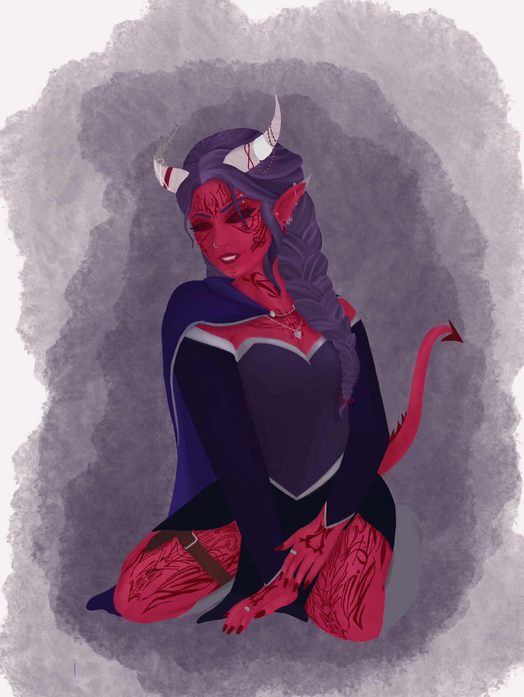

Some Terms Before We Begin
Important Terms
Dice Notation
The number before the d is how many dice to roll, the number after is how many sides each die has. For example, 2d6 means 2 six-sided dice. A full dice set includes: 1d4, 1d6, 1d8, 1d10, 1d12, 1d20, and 1d100 (percentile dice, looks like the d10).
Ability Check
An Ability Check is when you want to make an action (search a room for a hidden door, pick a lock, etc.), so your DM asks you to roll a d20 and add the relevant skill modifier (more on modifiers in step 7). This is the most common type of rolling.
Saving Throw
A Saving Throw is a d20 roll made to resist a threat like a spell, trap, poison, or monster's ability.
Difficulty Class
The Difficulty Class (DC) is the number you have to meet or beat to succeed at some task. Whether that's withstanding a spell with a Saving Throw DC, succeeding at an ability check with an Ability Check DC, or hitting an enemy against the enemy's Armor Class (their armor's DC).
Create Your Character Concept
Who Is Your Character?
Before you touch a single number on your sheet, think about your character as a person. Where did they grow up, and what was that like for them? What do they want more than anything else, and what are they afraid of? What do they love, what do they hate, and what do they believe in? You don't need answers to everything right now, just a rough sketch you can build on as you play.
This concept doesn't need to be complicated. A single sentence like "a disgraced knight looking to restore his family's honor" or "a curious scholar who ran away from home to see the world" is plenty to start with. Everything else (like your race, class, and background), will help fill in the details.
Character & Player Name
At the very top of your sheet you'll find two boxes: "Character Name" and "Player Name." The character name box is for whatever you land on for the concept you're building, and the player name box is for you, the real person playing them. Quick and easy, but a good first thing to fill in.
Personality Traits, Ideals, Bonds & Flaws
Under the name boxes, on the front page, you'll find four small boxes: Personality Traits, Ideals, Bonds, and Flaws. These take the concept you've been building above and turn it into a few concrete lines you (and your DM) can reference at the table.
Personality Traits
A quirk or habit that makes your character feel like a real person (Ex: "I tip generously, even when I can't afford it").
Ideals
A belief or principle your character holds close, the thing that guides their choices (Ex: "The strong have a duty to protect the weak").
Bonds
A person, place, or thing your character cares about deeply (Ex: "I'll do anything to protect my little sister").
Flaws
A weakness, vice, or blind spot that can get your character into trouble (Ex: "I can't resist a bet, even a bad one").
If your background (Step 6) comes with suggested traits, feel free to borrow from those, or just write your own to match the character you already have in your head.
Alignment
Alignment is a rough shorthand for your character's moral and personal outlook, written as two words like "Lawful Good" or "Chaotic Neutral." The first word is where they fall between Lawful, Neutral, and Chaotic (do they follow rules and tradition, or act on instinct and personal freedom?). The second word is where they fall between Good, Neutral, and Evil (do they look out for others, or mostly for themselves?).
Don't overthink it, alignment is a starting point, not a cage. Pick whichever combination feels closest to the character you sketched out above, then write it in the "Alignment" box.
The Classes at a Glance: Conceptually
Your class is one of the biggest parts of your concept, it shapes what your character is capable of and how they solve problems. Here's a one-sentence look at each to help spark ideas:
Barbarian
A fierce warrior who channels rage into devastating attacks.
Bard
A charismatic performer who inspires allies and weaves magic through music and words.
Cleric
A devoted servant of a deity, channeling divine power to heal and smite.
Druid
A guardian of nature who can shapeshift and command the elements.
Fighter
A master of weapons and combat tactics, adaptable to almost any fighting style.
Monk
A disciplined martial artist who fights with fists, focus, and inner energy.
Paladin
A holy warrior bound by a sacred oath to fight for their ideals.
Ranger
A skilled hunter and tracker at home in the wilderness.
Rogue
A cunning trickster who relies on stealth, precision, and quick thinking.
Sorcerer
A spellcaster with magic woven into their very being.
Warlock
A wielder of magic granted through a pact with a powerful otherworldly patron.
Wizard
A scholarly spellcaster who masters magic through study and preparation.
Artificer (Optional)
A brilliant tinkerer who channels their magic into creations. Artificers are not from the core rules, so make sure you ask your DM before considering this class.
A Quick Note on Backgrounds
Later on, in Step 6, you'll choose a "background," which is the mechanical side of your character's history in one word (Ex: acolyte, criminal, soldier, sage).
It grants you skills, tools, and a bit more flavor to round out your concept. You don't need to worry about it yet, just keep in mind that the character concept you're building now will help guide which background feels right later.
Character Examples
Still not sure where to start? Here are a few characters from our own table to help get the gears turning.
Aurora Kymatista, AKA "Crimson, The Pirate Queen"

Crimson is a cunning, swashbuckling, half-elf rogue, named for her fiery red hair that made her near impossible to miss on any deck she walked. She didn’t start out as the Pirate Queen, she was just another pair of hands on a creaking ship, quick-fingered (and quicker tongued), with a habit of acting before thinking, which got her into as much trouble as it got her out of.
What set her apart wasn’t raw power, it was her ability to read a room, find the angle nobody else saw, and talk (or fight) her way through whatever mess her impulses landed her in. Through clever schemes, desperate gambles, and more than a few decisions that should have gotten her killed, she clawed her way from anonymous crew member to the most feared captain on the sea.
Crimson is a reminder that you don’t need a grand title at the start, sometimes the best stories are about earning one.
Lyonoris

Placeholder paragraph describing this character's concept, personality, and what inspired them.
Acharia

Acharia is a life cleric whose story began as an orphan under the care of a fugitive priest. Though naturally volatile and shadowed by a dark disposition, her mentor looked past her rough edges, guiding her toward the path of healing. She eventually joined a band of adventurers who looked the other way regarding her frequent outbursts and questionable morals. Driven by a thirst for dominance, she entered into a sinister pact with a devil, yet her time on the road sparked an unexpected transformation. As her journey progressed, the cold, power-motivated hothead slowly found a new purpose, evolving into a steadfast protector who would sacrifice everything for the family she chose.
Choose your Class
What Is a Class?
Your class is the biggest mechanical choice you'll make, it decides what your character can actually do, how tough they are, what they're good at in a fight, and whether they cast spells. Back in Step 2 you saw a one-sentence flavor blurb for each class. Here we'll focus on the numbers behind them.
A Few Terms First
Hit Die
The die you roll for hit points (your health). A bigger die means a sturdier character. Your class's hit die also sets your starting hit points at level 1.
Primary Ability/Abilities
The ability score that matters most for this class. When you set your scores in Step 5, this is where you'll usually want your highest number. An "&" means both abilities are important, whereas an "or" means you should choose one or the other. For now, just know that it's the stat your class relies on most and you'll want it to be one of your highest numbers when you assign scores later.
Spellcasting
Whether the class casts spells, and if so, which ability score powers those spells. Not every class casts (more on spells in Step 8).
Subclass Level
This is the level where you choose a subclass (explained below).
Subclasses
Within each class there are subclasses that each provide unique features. Most subclasses are chosen at level 3, but some you choose at level 1 or 2. Think of your subclass as a specialization within your class, for example a Fighter might become a Champion (a straightforward, hard-hitting specialist) or an Eldritch Knight (a fighter who dabbles in magic).
The Class List Expanded - The Nitty-Gritty
Stuck on which one to choose? Non-spellcasters, like fighter, are easier to understand for newcomers. If you're leaning spellcaster, Clerics are always a good addition to the party, and aren't too complex.
| Class | Hit Die | Primary Ability/Abilities | Spellcasting | Subclass Level |
|---|---|---|---|---|
| Barbarian | d12 | Strength | None | 3 |
| Bard | d8 | Charisma | Yes (Charisma) | 3 |
| Cleric | d8 | Wisdom | Yes (Wisdom) | 1 |
| Druid | d8 | Wisdom | Yes (Wisdom) | 2 |
| Fighter | d10 | Strength or Dexterity | With Subclass (Intelligence) | 3 |
| Monk | d8 | Dexterity & Wisdom | With Subclass (Uses Ki) | 3 |
| Paladin | d10 | Strength & Charisma | Yes at Level 2 (Charisma) | 3 |
| Ranger | d10 | Dexterity & Wisdom | Yes at level 2 (Wisdom) | 3 |
| Rogue | d8 | Dexterity | With Subclass (Intelligence) | 3 |
| Sorcerer | d6 | Charisma | Yes (Charisma) | 1 |
| Warlock | d8 | Charisma | Yes (Charisma) | 1 |
| Wizard | d6 | Intelligence | Yes (Intelligence) | 2 |
| Artificer (Optional) | d8 | Intelligence | Yes (Intelligence) | 3 |
Note: The Artificer isn't part of the core rules, so make sure you ask your DM before choosing this class.
Proficiencies
Keep an eye out for the following, and write them in the "Other Proficiencies & Languages" box on your character sheet for now. We'll go over how they work in more detail later in step 7.
Skills
Your Class and Background grant you a list of skills, keep track of which ones are offered as we'll choose those in Step 7.
Languages
Your race usually grants Common plus one or two more, and your background can add extras.
Tools
Things like thieves' tools, an artisan's tools, or a musician's instrument. Being proficient means you add your proficiency bonus when you use that tool for a check.
Gaming Sets & Other Proficiencies
A specific gaming set (like dice or playing cards) works just like a tool proficiency, just themed around games of chance instead of a trade.
Weapons & Armor
Your class determines which armor categories (light, medium, heavy, shields) you're trained to wear without penalty. Your class also determines which weapon categories (simple and/or martial) you're trained to use. Step 9 includes the full breakdown of weapon & armor types.
Choose your Race
What Is a Race?
Your race represents your character's ancestry, the people or lineage they were born into. It's mostly a story choice (are you a human, an elf, a dwarf, a halfling, or something more unusual), but it also comes with a small bundle of built-in traits that shape how your character moves through the world.
What Does Race Affect?
Every race grants a handful of traits automatically. You don't choose these, they come as a package once you pick a race. Below are the most common things a race affects.
Ability Score Increases
Most races bump one or more of your six ability scores. This is added on top of the scores you'll set in Step 5 (for example, elves get +2 Dexterity).
Size
Typically "Small" or "Medium", which affects things like the space you take up and some of the gear you can use.
Speed
How far you can move on your turn, measured in feet (most races walk 30 feet, some are faster or slower). See more on movement speed below.
Special Traits
Extra perks unique to your race, such as darkvision (seeing in the dark), resistance to certain kinds of damage, or a free skill or language.
Movement Speed
Your speed is how many feet you can move on your turn in combat, and it's a good baseline for travel outside of combat too. Most races walk 30 feet, though some (like gnomes and dwarves) are a bit slower at 25 feet, and a few are faster. Whatever your race grants, write that number in the "Speed" box near the top of your sheet.
Difficult terrain (like rubble, mud, or thick underbrush) costs extra movement, and some race traits or spells can boost your speed further. For now, just get your base number written down, you'll use it constantly once you're at the table.
Where to See the Full List
There are a lot of races to choose from, and each one has its own set of traits. Rather than listing them all here, browse the full lineup and pick whichever fits the character concept you built back in Step 2. When you've decided, write it in the "Race" box, you'll apply its ability score increases once you set your scores in Step 5.
Some races may be from other sources, make sure to confirm with your DM on which sources they use.
Determine Your Ability Scores
What Are the Six Ability Scores?
Strength (STR)
Measures physical power, athletic training and the extent to which you can exert raw bodily force. In combat, your Strength modifier is added to melee weapon attack rolls (to determine if you hit) and to the damage roll (to determine how hard you hit. More on that in step 10)
Important For: Barbarian, Fighter (STR based), Paladin
Dexterity (DEX)
Measures physical agility, reflexes, balance, and hand-eye coordination. Dexterity contributes to how hard you are to hit. The more agile you are, the harder it is for enemies to land a blow. You'll calculate the exact number (called Armor Class or AC) in step 9, once you've also chosen your armor.
Important For: Rogue, Ranger, Monk, Fighter (DEX based)
Constitution (CON)
Measures internal fortitude, stamina, physical endurance. Constitution is used to determine your Hit Points (your health), your ability to survive harsh environments, and your resilience against poisons and diseases.
Important For: Hit Point Calculation
Intelligence (INT)
Measures mental ability, information recall, and analytical skill. Intelligence governs your ability to reason, memorize facts, and understand unfamiliar languages or arcane theories.
Important For: Wizard, Artificer
Wisdom (WIS)
Measures your attunement to the world, perceptiveness, and intuition. Wisdom represents how well you read body language, notice hidden threats, and harness certain magical energies.
Important For: Cleric, Druid, Ranger
Charisma (CHA)
Measures your force of personality, eloquence, and leadership. Charisma determines how effectively you can persuade, deceive, intimidate, and charm others.
Important For: Bard, Paladin, Sorcerer, Warlock
How to Determine Your Scores
Ability scores are determined three main ways, but no matter which method you use, ability scores max out at 20 for player characters, even after racial bonuses and level-ups. Make sure to check with your DM before choosing a method, as some DMs may have a preference.
Rolling for Stats
To roll for your stats you're going to need 4d6 (four six-sided dice). Roll all four at once and add up the three highest rolls (ignore the lowest rolled die). Then repeat this for all six ability scores. Once you have all six numbers, assign them to whichever abilities you like (usually putting your highest in your class's primary ability), then add in the ability score increases from the race you chose in Step 4. Know these numbers still aren't final; leveling up later can raise them further. This option (in my opinion) is the most enjoyable, because who doesn't like rolling a lot of dice?
Standard Array
Standard Array is the fastest and most simple way to set your ability scores: you get six preset numbers (15, 14, 13, 12, 10, and 8) and assign them to your six stats however you like. There's no math involved, just placement. It's a great option if you want a simple and balanced character without spending time on number-crunching, very good for someone starting out.
Point Buy
Point Buy gives you 27 points to spend on your six ability scores, with each score starting at 8. You can raise a score by spending points but keep in mind, lower scores are cheaper. Each point of increase up to 13 costs 1 point; raising a score from 13 to 14 or from 14 to 15 costs 2 points each. No score can go above 15 (before racial bonuses), keeping characters balanced while giving you full control over your build. This option has much more precision to your scores, allowing you to build the exact character you want.
| Score | Point Cost |
|---|---|
| 8 | 0 |
| 9 | 1 |
| 10 | 2 |
| 11 | 3 |
| 12 | 4 |
| 13 | 5 |
| 14 | 7 |
| 15 | 9 |
So What Do I Do With These Numbers?
Your Ability Scores are the basis of your character's technical ability. They affect your health, how hard you hit, how well you take a hit, and so much more. Each Ability Score corresponds to a “modifier” which you use to affect your dice rolls. Your modifier is also added to saving throws (a d20 roll that symbolizes a reaction to the environment) depending on which ability score is being tested.
To calculate your modifier, take your Ability Score, subtract 10, and divide by 2, rounding down if necessary (see table below).
Example (rolled a 17):
17 - 10 = 7 -> 7 / 2 = 3.5 -> rounded down -> modifier = +3
Ability Score Modifier Table
| Ability Score | Modifier |
|---|---|
| 0-1 | -5 |
| 2-3 | -4 |
| 4-5 | -3 |
| 6-7 | -2 |
| 8-9 | -1 |
| 10-11 | +0 |
| 12-13 | +1 |
| 14-15 | +2 |
| 16-17 | +3 |
| 18-19 | +4 |
| 20 | +5 |
House Rules
Some DMs may have custom rules for character creation. These are not official rules however, always confirm with your DM what house rules they have (if any!)
▼ My Personal House Rules for Rolling
- You may reroll 1 stat, but you must take the reroll
- If your 6 ability scores do not add up to at least 72 (after rerolling your 1 stat), you may reroll all 6 Ability Scores.
Choose your Background
What Is a Background?
Your background is what your character did with their life before they became an adventurer. Were they a soldier, a criminal, a scholar, or a temple acolyte? It's a short answer to the question "where did this person come from?" and it helps ground your concept in the world.
What Does a Background Grant?
Beyond flavor, your background hands you a few mechanical perks that reflect that former life.
Skill Proficiencies
A couple of skills you're trained in, based on your former line of work (more on skills in Step 7).
Tool Proficiencies and/or Languages
Things like a set of lock picking tools, a card set, and/or an extra language.
A Small Feature
A minor roleplaying perk, such as always being able to find a place to rest or being recognized by members of a certain group.
Starting Equipment
A little bit of themed gear and some coin to get you going.
Choose your Background
Pick the background that best matches the concept you sketched out in Step 2, then write it in the "Background" box.
Choose your Skills
What Are Skills?
Skills represent the specific things your character is trained to do well, like sneaking, persuading, climbing, or noticing danger. When you're "proficient" in a skill, you add your proficiency bonus to rolls that use it, making you noticeably better at that task than someone untrained.
Your Proficiency Bonus
Your proficiency bonus is a single number you add whenever you're trained in what you're doing, whether that's a skill, a saving throw, or an attack. It starts at +2 at level 1 and slowly grows as you level up, so everything you're proficient in gets better over time.
| Character Level | Proficiency Bonus |
|---|---|
| 1-4 | +2 |
| 5-8 | +3 |
| 9-12 | +4 |
| 13-16 | +5 |
| 17-20 | +6 |
The Skills by Ability Score
Every skill is tied to one of your six ability scores. When you make a skill check, you roll a d20 and add that ability's modifier, plus your proficiency bonus if you're trained in the skill. Here are the main skills grouped by the ability that governs them.
Strength
- Athletics
Dexterity
- Acrobatics
- Sleight of Hand
- Stealth
Intelligence
- Arcana
- History
- Investigation
- Nature
- Religion
Wisdom
- Animal Handling
- Insight
- Medicine
- Perception
- Survival
Charisma
- Deception
- Intimidation
- Performance
- Persuasion
Constitution
You'll notice Constitution has no skills. Instead it works quietly in the background, affecting your hit points and certain saving throws. It still matters, it just won't show up in the Skills section of your sheet.
Passive Scores
Some checks happen without you rolling any dice, these use a "passive" score. A passive score is just 10 plus the relevant modifiers (your ability modifier, plus your proficiency bonus if you're trained). The most common one is passive Perception, which your DM uses to quietly decide whether you notice things like a hidden trap or a sneaking enemy, without tipping you off by asking for a roll.
You Don't Pick Freely
You can't just grab any skills you like off the full list. Instead, your class and your background each hand you a limited menu to choose from. A class might say "choose two from Acrobatics, Athletics, Stealth, and a few others," while your background simply grants a fixed couple of skills. Bubble in the skills you end up proficient in under the "Skills" section of your sheet.
Other Proficiencies
Tools and gaming sets work just like skills, if you're proficient, add your proficiency bonus when you use them. Armor and weapon proficiencies work a little differently, using armor you're not trained in doesn't just skip a bonus, it actively hurts you, so try to stick to what your class allows. For weapons, you just don't add the proficiency bonus to your "To Hit" modifier if you're not proficient with that weapon.
Choose your Spells
What Are Spells?
Spells are magical effects your character can cast, from hurling fire, to healing a wounded ally, to unlocking a door from across the room. Only some classes can cast spells, so if you picked a non-caster this step may not apply to you. This is a high-level overview, so you know how the system works before you dig into specific spells.
Which Classes Cast Spells?
Non-Casters (By Default)
- Barbarian
- Fighter (can with subclass)
- Monk (can with subclass)
- Rogue (can with subclass)
If you chose any of the above classes and don't plan on using a specific spellcasting subclasses, you can skip the rest of this step.
Known Spellcasters
- Bard
- Sorcerer
- Warlock
- Ranger
Prepared Spellcasters
- Cleric
- Druid
- Paladin
- Artificer
The Hybrid Spellcaster
The wizard is a special caster that uses a spellbook. They "know" multiple spells in their book (recording them), but also must prepare a smaller subset each day (equal to Wizard level + Intelligence Modifier)
Spell Slots
Casting most spells uses up what is called a "spell slot". You can think of spell slots as charges of magical energy. You have a limited number of them, and each is tied to a level (level 1, level 2, and so on until level 9). Casting a spell spends one slot of the appropriate level with higher-level slots fueling more powerful magic. Once you're out of spell slots you can't cast those spells again until you take a long rest (8+ hours, in a comfortable location) and recharge them. If you're playing a Warlock, you regain your spell slots at any rest, short or long.
Cantrips vs. Leveled Spells
Cantrips
Simple spells you can cast as often as you like. They don't use spell slots, so you'll never run out of them, but they're much less powerful. Some cantrips scale with your level over time (for example, at level 5 when you cast Firebolt, you get 2d10 damage die instead of 1d10).
Leveled Spells
The stronger spells (levels 1 through 9) that cost a spell slot of that spell's level each time you cast them. The higher the level, the stronger the spell. Some spells allow you to "Up-Cast" them, meaning you can cast that spell at a higher level for additional effects. Make sure to read the spell's text fully to understand what it does.
If you're playing a Warlock, your spell slots are always the same level. So, if you are a 5th level warlock, you have 2 3rd level spell slots. If you're casting a spell that allows you to up-cast it, you always cast it at your Warlock spell level.
Prepared vs. Known Casters
Which category your class falls into affects how flexible your magic feels day to day, but both types still spend spell slots to cast.
Known Casters
They learn a fixed set of spells and can only cast those. Their list changes slowly, they swap or add spells as they level up.
Prepared Casters
They have access to a wider list but must choose which spells to "prepare" after each rest. They can change their lineup day to day, but only get to ready a limited number at a time equal to your Class Level + your Spellcasting Ability Modifier (for example, a 3rd level Cleric with a +3 Wisdom, would be able to prepare 6 spells). Paladins & Artificers use half their class level instead, rounded down, with a minimum of 1 prepared spell.
Spell Attack Modifier & Spell Save DC
Most classes that cast spells lean on one specific ability score to fuel their magic (Intelligence, Wisdom, or Charisma depending on the class). Your "Spellcasting Ability Modifier" is the same as the modifier from your main ability score. Write the following numbers in the boxes near the top of the "Spells" sheet, once you've got your ability scores and proficiency bonus figured out from Steps 5 and 7.
Spell Attack Modifier
Your proficiency bonus + your spellcasting ability modifier. Used just like a weapon's attack bonus, for spells that require you to roll to hit (like Fire Bolt).
Spell Save DC
8 + your proficiency bonus + your spellcasting ability modifier. For spells that force a target to make a saving throw instead (like Fireball), this is the number they need to meet or beat to avoid or reduce the effect.
Spells Under "Attacks & Spellcasting"
Some of your spells also get logged in the "Attacks & Spellcasting" section, the same table you'll use for weapons in Step 9. For a spell you attack with, list the spell's name, use your Spell Attack Modifier (above) as the attack bonus, and use the spell's damage die plus any modifier the spell calls for. For spells that use a saving throw instead, just note the effect and reference your Spell Save DC.
Choose your Equipment
What Is Equipment?
Equipment is everything your character carries into the adventure: weapons, armor, and the assorted supplies that keep an adventurer alive. At level 1 you don't have to shop for any of it, your class and background hand you a starting kit automatically.
Starting Equipment
Your gear you start with comes from two places, you can write it all down in the "Equipment" section of your sheet.
Your Class
Your class provides the big-ticket adventuring gear, usually a choice of weapons, any armor you're trained to wear, and a themed pack of supplies (rope, rations, a bedroll, and the like).
Your Background
Your background adds a few personal items tied to your character's history, along with a small amount of starting coin.
Currency
Money in D&D comes in five types of coin, from least to most valuable: copper (cp), silver (sp), electrum (ep), gold (gp), and platinum (pp). Gold is the standard you'll see most often, the others mostly show up as flavor or odd change.
| Coin | Value in Copper | Value in Gold |
|---|---|---|
| Copper (cp) | 1 | 1/100 gp |
| Silver (sp) | 10 | 1/10 gp |
| Electrum (ep) | 50 | 1/2 gp |
| Gold (gp) | 100 | 1 gp |
| Platinum (pp) | 1,000 | 10 gp |
Your background hands you a small starting amount of coin. Write it in the CP / SP / EP / GP / PP boxes on your sheet next to the "Equipiment" box. That will be your spending money for anything you pick up beyond your starting gear.
Armor Categories & Armor Class
Armor is grouped into categories, and your class decides which ones you're trained to use. Wearing armor you're not trained in leaves you clumsy and worse off, so try to stick to what your class allows.
Armor Class
Armor Class (AC) is determined by what armor you are wearing (if any). It is the number enemies need to meet or beat with their attack roll in order to hit you.
Below is how to calculate it based on your armor type.
Light Armor
Light armor is easy to move in and rewards a high Dexterity, favored by nimble characters. For your AC, take the armor's base AC + your Dexterity Modifier.
Medium Armor
Medium armor offers a balance of protection and mobility. For your AC, take the armor's base AC + your Dexterity Modifier, with a maximum of +2.
Heavy Armor
Heavy armor gives the most protection, but is bulky and demands a strong character to wear well. For your AC, just take the armor's base AC, do not add your Dexterity Modifier. You also have disadvantage on Stealth Ability Checks.
Shields
Shields are held in one hand and add a bit of extra protection on top of whatever armor you're already wearing. For your AC, add +2 to any of the above armor types (if you're proficient with shields).
▼ Armor Table:
| Armor | Type | Armor Class (AC) | Strength | Stealth | Weight |
|---|---|---|---|---|---|
| Padded | Light | 11 + Dex modifier | — | Disadvantage | 8 lb. |
| Leather | Light | 11 + Dex modifier | — | — | 10 lb. |
| Studded Leather | Light | 12 + Dex modifier | — | — | 13 lb. |
| Hide | Medium | 12 + Dex modifier (max 2) | — | — | 12 lb. |
| Chain Shirt | Medium | 13 + Dex modifier (max 2) | — | — | 20 lb. |
| Scale Mail | Medium | 14 + Dex modifier (max 2) | — | Disadvantage | 45 lb. |
| Breastplate | Medium | 14 + Dex modifier (max 2) | — | — | 20 lb. |
| Half Plate | Medium | 15 + Dex modifier (max 2) | — | Disadvantage | 40 lb. |
| Ring Mail | Heavy | 14 | — | Disadvantage | 40 lb. |
| Chain Mail | Heavy | 16 | Str 13 | Disadvantage | 55 lb. |
| Splint | Heavy | 17 | Str 15 | Disadvantage | 60 lb. |
| Plate | Heavy | 18 | Str 15 | Disadvantage | 65 lb. |
| Shield | Shield | +2 | — | — | 6 lb. |
Weapon Categories & Properties
Weapons are split into groups based on how they're used and how tricky they are to wield. Your class sets which types you're trained with.
Simple Weapons
Simple weapons are common and easy to use, things like short-swords, daggers, and spears. Most classes can use these.
Martial Weapons
Martial weapons are more specialized and hit harder, such as longswords and greataxes, but require proper training.
Melee & Ranged
Weapons are also either melee (used up close) or ranged (like bows and crossbows, used from a distance).
Weapon Properties
Each weapon in the tables below also lists its properties, a handful of tags that describe how it works.
▼ Here is a list of the most common properties:
Finesse
You can use Dexterity instead of Strength for your attack and damage rolls.
Light
Small and quick, needed for two-weapon fighting.
Heavy
Bulky enough that Small characters have disadvantage using it.
Reach
Adds 5 feet to how far you can attack in melee.
Thrown
You can throw it as a ranged attack, using the listed range.
Versatile
Deals more damage when used with two hands (the second damage die listed).
Two-Handed
Requires both hands to use.
Ammunition
Needs ammo (arrows, bolts, sling bullets) to fire, at the listed range.
Loading
You can only fire one shot per attack action, no matter how many attacks you'd normally get.
Special
The weapon has a unique rule of its own, check its full description.
▼ Simple Melee Weapons Table:
| Weapon | Damage | Properties | Weight |
|---|---|---|---|
| Club | 1d4 bludgeoning | Light | 2 lb. |
| Dagger | 1d4 piercing | Finesse, light, thrown (range 20/60) | 1 lb. |
| Greatclub | 1d8 bludgeoning | Two-handed | 10 lb. |
| Handaxe | 1d6 slashing | Light, thrown (range 20/60) | 2 lb. |
| Javelin | 1d6 piercing | Thrown (range 30/120) | 2 lb. |
| Light Hammer | 1d4 bludgeoning | Light, thrown (range 20/60) | 2 lb. |
| Mace | 1d6 bludgeoning | — | 4 lb. |
| Quarterstaff | 1d6 bludgeoning | Versatile (1d8) | 4 lb. |
| Sickle | 1d4 slashing | Light | 2 lb. |
| Spear | 1d6 piercing | Thrown (range 20/60), versatile (1d8) | 3 lb. |
▼ Martial Melee Weapons Table:
| Weapon | Damage | Properties | Weight |
|---|---|---|---|
| Battleaxe | 1d8 slashing | Versatile (1d10) | 4 lb. |
| Flail | 1d8 bludgeoning | — | 2 lb. |
| Glaive | 1d10 slashing | Heavy, reach, two-handed | 6 lb. |
| Greataxe | 1d12 slashing | Heavy, two-handed | 7 lb. |
| Greatsword | 2d6 slashing | Heavy, two-handed | 6 lb. |
| Halberd | 1d10 slashing | Heavy, reach, two-handed | 6 lb. |
| Lance | 1d12 piercing | Reach, special | 6 lb. |
| Longsword | 1d8 slashing | Versatile (1d10) | 3 lb. |
| Maul | 2d6 bludgeoning | Heavy, two-handed | 10 lb. |
| Morningstar | 1d8 piercing | — | 4 lb. |
| Pike | 1d10 piercing | Heavy, reach, two-handed | 18 lb. |
| Rapier | 1d8 piercing | Finesse | 2 lb. |
| Scimitar | 1d6 slashing | Finesse, light | 3 lb. |
| Shortsword | 1d6 piercing | Finesse, light | 2 lb. |
| Trident | 1d6 piercing | Thrown (range 20/60), versatile (1d8) | 4 lb. |
| War Pick | 1d8 piercing | — | 2 lb. |
| Warhammer | 1d8 bludgeoning | Versatile (1d10) | 2 lb. |
| Whip | 1d4 slashing | Finesse, reach | 3 lb. |
▼ Ranged Weapons Table:
| Weapon | Category | Damage | Properties | Weight |
|---|---|---|---|---|
| Light Crossbow | Simple | 1d8 piercing | Ammunition (range 80/320), loading, two-handed | 5 lb. |
| Dart | Simple | 1d4 piercing | Finesse, thrown (range 20/60) | 1/4 lb. |
| Shortbow | Simple | 1d6 piercing | Ammunition (range 80/320), two-handed | 2 lb. |
| Sling | Simple | 1d4 bludgeoning | Ammunition (range 30/120) | — |
| Hand Crossbow | Martial | 1d6 piercing | Ammunition (range 30/120), light, loading | 3 lb. |
| Heavy Crossbow | Martial | 1d10 piercing | Ammunition (range 100/400), heavy, loading, two-handed | 18 lb. |
| Longbow | Martial | 1d8 piercing | Ammunition (range 150/600), heavy, two-handed | 2 lb. |
Attack & Damage Bonuses
Attack Name
Under the "Attacks & Spellcasting" section, you'll see three boxes. The first is the weapon (or spell) name, for example "Greatsword" or "Tidecaller".
Attack Bonus
The second box is for "Attack Bonus", which is equal to your relevant weapon modifier + proficiency bonus. For ranged weapons, your attack bonus will be your proficiency bonus + your Dexterity modifier. For (most) melee weapons, your attack bonus will be your proficiency bonus + your Strength modifier. If your melee weapon has the Finesse property you may use either Strength or Dexterity (+ proficiency bonus) for your attack roll. When you attack an enemy on your turn, you roll a d20 and add your attack bonus. If you rolled equal to or higher than your enemy's Armor Class (AC) on your attack roll, then you roll your Damage Die (up next).
Damage & Type
The third and final box is "Damage & Type". Here you will put your weapon's damage die (for example, a shortsword has a damage die of 1d6) + the relevant weapon modifier (Strength or Dexterity). If you succeed on an attack roll, you'll roll the damage die and add the modifier and that's how many hit points your enemy loses.
Important Combat Stats
Hit Points at First Level
Hit points, or HP, are determined at first level by taking the maximum on your character's hit die (determined by your class) and add your Constitution modifier. That will be your maximum HP, and your starting current HP.
Hit Dice & Rests
Hit Dice are special dice determined by your class (for example, a wizard has a d6 for their hit die) that are used to regain health, or determine how much health you gain at a level up (more on leveling up on the "Extra Rules" page).
When you take a short rest (a period of 1 hour, where you do low-effort tasks such as sitting by a fire or reading a book), you can spend any number of your available hit dice (you have a maximum equal to your level in that class). For each die you spend, roll it and add your Constitution modifier to that individual roll. Add up your results, and that's how many hit points you recover. You can spend as few or as many as you want.
When you take a long rest (an 8-hour resting period, spent somewhere comfortable), you regain half of your expended hit dice (rounded down, with a minimum of 1), as well as restore full HP.
Death Saves
If your HP drops to 0, you're not dead yet, you're dying. At the start of each of your turns, roll a d20 death saving throw (no modifiers added): a 10 or higher is a success, anything lower is a failure. Rack up three successes and you stabilize (still at 0 HP, but no longer in danger). Rack up three failures and your character dies.
A natural 20 is special, you regain 1 HP and pop back into the fight immediately. A natural 1 counts as two failures instead of one. Taking any damage while you're at 0 HP counts as an automatic failure (two, if it's a critical hit). Mark your successes and failures in the small circles on your sheet.
Saving Throw Modifiers
A saving throw (or "save") is a roll you make to resist or shrug off something bad, like a trap, a spell, or a poison. Each of your six ability scores has its own saving throw, and the math works just like a skill check: roll a d20, add that ability's modifier, and add your proficiency bonus if your class made you proficient in that save (back in Step 3).
Fill in all six saving throw modifiers on your sheet, and don't forget to mark the two your class made you proficient in.
Initiative
Your Initiative bonus is going to be the exact same as your Dexterity bonus. So if Dex. is +2, Initiative is +2. When combat begins, everyone rolls a d20 and adds their Initiative bonus (including the enemies!) That then determines the turn order of the combat encounter.
Beyond Level 1
If your D&D session starts beyond level 1, check out the "Extra Rules" page for more information on leveling up!